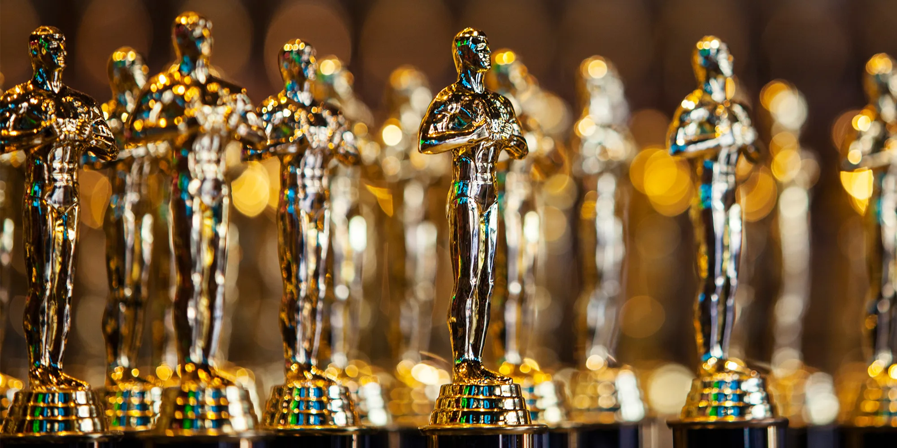

The nominees and winners highest prize of the Academy Awards, Best Picture, have been able to reflect Hollywood's tendencies (both good and bad) in the last 10 years.
After over three hours of awards, terrible jokes and celebrity slaps, the 94th Academy Awards was nearing an end. Lady Gaga and Liza Minnelli took the stage at the Dolby Theatre and announced the 10 nominees for Best Picture. The nominees had been known for months and had been shown throughout the night. There were betting favorites like “The Power of the Dog” and box office smashes like “Dune”.
But the winner that Gaga and Minnelli announced was neither of those films. Instead, it was director Sian Heder’s “CODA”. It was a film that got attention at the 2021 Sundance Film Festival and then made its way to the streaming service Apple TV+. With the win, it became the first film to be distributed by a streaming service. As the cast and crew made it onto the stage, most of the audience didn’t clap and instead applauded by raising their hands in the air and shaking them. This is the standard mode of applause in American Sign Language, which was the primary language of “CODA”.
This was the first time in the history of the award show that a film told in Sign Language won Best Picture. It has been part of a shift for the Oscars, as two years earlier, “Parasite” became the first non-English film to win the biggest prize. Over the past 10 years, the demographics of films that have been nominated for and won Best Picture have changed immensely in many different ways. They reflect the general trends of Hollywood, both good and bad.
And the nominees for Best Picture are... #Oscars pic.twitter.com/wKEWVMpqwl
— The Academy (@TheAcademy) February 8, 2022
In 2020, the College of Social Sciences at the University of California, Los Angeles completed a study titled “Hollywood Diversity Report 2020”. The study tracked the top 200 theatrical film releases to see “the degree to which women and people of color are present in front of and behind the camera.”
While the gap between male and females has shortened over the last decade, males still account for a majority of lead acting roles in Hollywood. Women made up 44.1% of the leads in top films for 2019. While it is still a minority, it is a considerable growth as women only made up 25.3% of lead roles in 2013.
The last decade of Best Picture nominees reflect this disparity. Of the last 10 years, 75% of films nominated for Best Picture had a male as the lead. This finding was completed by seeing which actor was billed as the leading role in promotions.
Columnist Marta Sundac said that Hollywood can be described as a microcosm of the world. So it makes sense to her that Hollywood is perpetuating these gender disparities in various aspects of film.
“From early film noirs imprinting the evil femme fatale stereotype in our minds, to the still mostly unbroken glass ceiling, the film industry swings heavily in favor of men,” Sundac said.
In her column in the Highsnobiety blog, Sundac argues that women should not only get lead roles, but also should get the director position. This is important because the director role is held in high regard in the film industry. According to the Nashville Film Industry, “film directors make creative decisions to determine the look of a movie.”
But the diversity of directors also applies to race as well. This is a disparity that is more significant. In the UCLA study, only 14.4% of minorities are directors in Hollywood films in 2019. Once again, the Best Picture nominees display this gap. Of the 87 films, 64 of them had a white director.
However, context is needed. At least among the Oscars, the diversity of directors of the last 10 years is a massive step compared to the first 80 years of the awards. There have been five nominees with Asian directors in the last 10 years compared to four before 2013. In 2009, Lee Daniels became the first Black director to have his film, “Precious: Based on the Novel 'Push' by Sapphire”, nominated for Best Picture. Since 2013, there have been nine Black directors with films nominated for the top prize.
Kendall Phillips, a Syracuse University professor in Communication and Rhetorical Studies, cited the Academy of Motion Picture Arts and Sciences changing its voter base as a big reason why there has been more diversity in directors and films in general. After the 2015 Oscars, which sparked controversy after all the nominees for acting awards were white, the Academy changed its voter base to increase diversity. Phillips also said that it is a part of the ever-changing international film industry.
“I think it's the reality that other countries invest in quality, artistic filmmaking,” Phillips said.
For better or worse, the film and television review-aggregation website Rotten Tomatoes has become extremely influential in moviegoers’ decision to see a certain film. In 2015, the film studio 20th Century Fox commissioned a study titled “Rotten Tomatoes and the Box Office.” The study found that the website’s influence will only grow stronger. This influence has been noticeable. If a film has a high score, film studios will put the rating in promotion.
Rotten Tomatoes aggregates reviews from both fans and critics and creates two separate scores. In both cases, every film nominated for Best Picture in the last 10 years has both a fan and critic score higher than 50%. However, there has been a notable difference between fans and critics when it comes to these scores, especially when it comes to the winners of Best Picture.
A Rotten Tomatoes score being featured in a promo for the 2021 film, "West Side Story."
Out of the last 10 films that won Best Picture, nine of them have a higher score from critics than fans. The common moviegoer is hearing about these films less and less as the years go by. Part of this is that many of these smaller budget films are now coming out on streaming services. Half of the 2022 Best Picture nominees were released on streaming platforms. Phillips said that the platforms have stepped in to fill that artistic side of the industry.
“Hollywood has always had this tension between wanting to be an art form, and wanting to be popular,” Phillips said. “And the Academy has become, to some extent, that part of Hollywood that wants to keep validating the artistic side.”
Another way the Best Picture nominees reflect Hollywood’s current tendencies is through the run time. People have felt that movies are getting longer. But that doesn’t seem to be the case. Even so, the average Best Picture nominated films generally fall with the Hollywood norm.
The majority of films that are nominated for Best Picture come in at a runtime of 2:00-2:29 minutes. This would make sense as according to the Internet Movie Database, the 2021 films with the highest box office gross averaged around 131 minutes (2:11).
See how the data was compiled and analyzed to determine the findings of this article
Get the data
Share this article by copying the URL and pasting it in your next post!